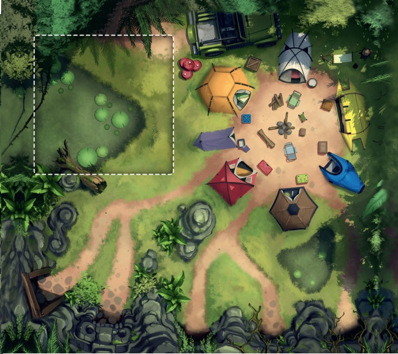
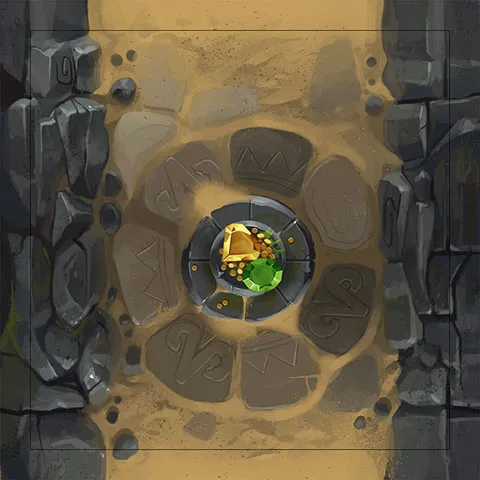

Bienvenue sur notre site dédié au jeu Diamant !
Le jeu Diamant est un jeu de société palpitant qui vous plonge dans l'univers de l'exploration de grottes mystérieuses remplies de richesses inestimables. Votre mission est de rassembler le plus de trésors possible en naviguant avec prudence à travers des passages dangereux.
Faites preuve de stratégie, anticipez les pièges, et prenez des décisions audacieuses pour accumuler les richesses tout en évitant de tout perdre en cours de route.
Règles du jeu Diamant :
Une partie du jeu Diamant se joue en 5 manch
Chaque manche représente une grotte, ensemble, les joueurs explorent les grottes.
Ils y trouvent certes de précieuses gemmes, mais s’exposent aussi à des pièges.
La composition du paquet de cartes est :
- 15 cartes rubis avec comme valeurs :
1, 2, 3, 4, 5, 5, 7, 7, 9, 11, 11, 13, 14, 15, 17
- 15 cartes pièges réparties en 5 types de pièges en 3 exemplaires chacun :
3 serpents, 3 boulets, 3 araignées, 3 laves, 3 pics
- 5 reliques (qui valent 5, 7, 8, 10 et 12 rubis) :
Avant que l’on ne retourne une nouvelle carte, chaque joueur doit à chaque fois décider
s’il prend le risque d’avancer plus profondément encore dans la grotte pour trouver
plus de richesses, ou s’il préfère rentrer au camp mettre son butin à l’abri.
Déroulement d’une manche :
On retourne la première carte Expédition de la pioche.
Selon que la carte piochée indique des rubis ou un danger,
il se passe ce qui suit:
Rubis
La valeur de la carte rubis sera partagée équitablement entre les joueurs encore présents dans la grotte, et le reste sera posé par terre.
Exemple :
Dans une partie à 5 joueurs, une carte rubis de valeur 9 a été tournée, le sac de chaque joueur prend un rubis, et les 4 rubis restants sont posés par terre.
Les rubis que l'on récupère pendant l’expédition sont posés dans le sac de chaque joueur et sont donc susceptibles d’être perdus. Ce n’est que lorsqu'on rentre au campement que le coffre se remplit avec le contenu du sac.
PiègesSi un piège apparaît pour la première fois depuis notre entrée dans la grotte, il ne se passe rien et l’expédition continue. Par contre, si le même piège est révélé une seconde fois (pas nécessairement tout de suite après la première fois), tous les joueurs encore présents dans la grotte rentrent immédiatement au campement les mains vides. Et l’expédition prend fin.
Exemple :
Lorsqu’une première carte Danger (dans cet exemple) "Serpent" est révélée, rien ne se passe et l’expédition continue. Lorsque, plus tard dans la même manche, une deuxième carte "Serpent" est révélée, les joueurs abandonnent leurs trésors, et l’expédition se termine.

La carte Relique reste sur le chemin de la grotte et rien ne se passe. Ensuite, on passe directement à la phase “Décision des joueurs”. La carte ne prendra sa valeur qu’au moment où un joueur quittera la grotte et la récupèrera seulement s'il est seul.
Décision des joueurs :
Avant qu’une nouvelle carte Expédition ne soit révélée,
chaque joueur encore présent dans la grotte doit décider
soit de continuer l’expédition en s’enfonçant dans la
grotte, soit de retourner prudemment au campement
pour mettre ses Pierres Précieuses à l’abri dans son coffre.
Pour cela, le joueur doit faire un choix de décision secrètement (rester ou sortir).
Les joueurs qui partent :
- se partagent les rubis restés au sol
- S'ils sont seuls, ils ramassent toutes les reliques au sol
Fin de la manche :
Une expédition prend fin lorsque tous les joueurs sont rentrés au campement ou lorsqu’un même Danger apparaît pour la deuxième fois dans la grotte. On passe alors à la manche suivante.
Fin de la partie :
Une fois la cinquième expédition terminée, tous les joueurs comptent leurs trésors, et le joueur ayant le score total le plus élevé est vainqueur.